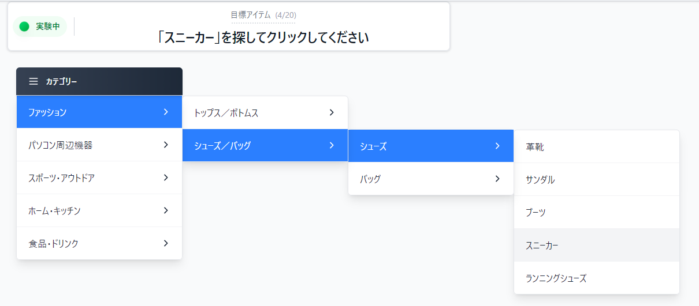

イージング関数における効果測定実験
イージング関数選択：
Linear
EaseInOutQuad
EaseInOutQuint
EaseInOutExpo
EaseInOutBack
タスク開始
チュートリアル開始
結果一覧
タスク番号
正解項目
所要時間 (s)
エラー回数
タイムアウト
使用したイージング関数
結果をダウンロード
タスクが完了しました！
🏅 MVPイージング関数:
-
項目
値
全体正解率
0%
平均時間
0.00s
最速タスク
-
総クリック数
-
メニュー移動距離
-
初回クリック平均
-
アンケートへ進む

メニューを開くたびにマウスでクリックして選択してください。下のボタンで開始してください。制限時間は1タスク当たり15秒です。
閉じる
タスクについてのアンケート
1
2
3
4
5
1
2
3
4
5
1
2
3
4
5
次のタスクへ
日本語
|
English